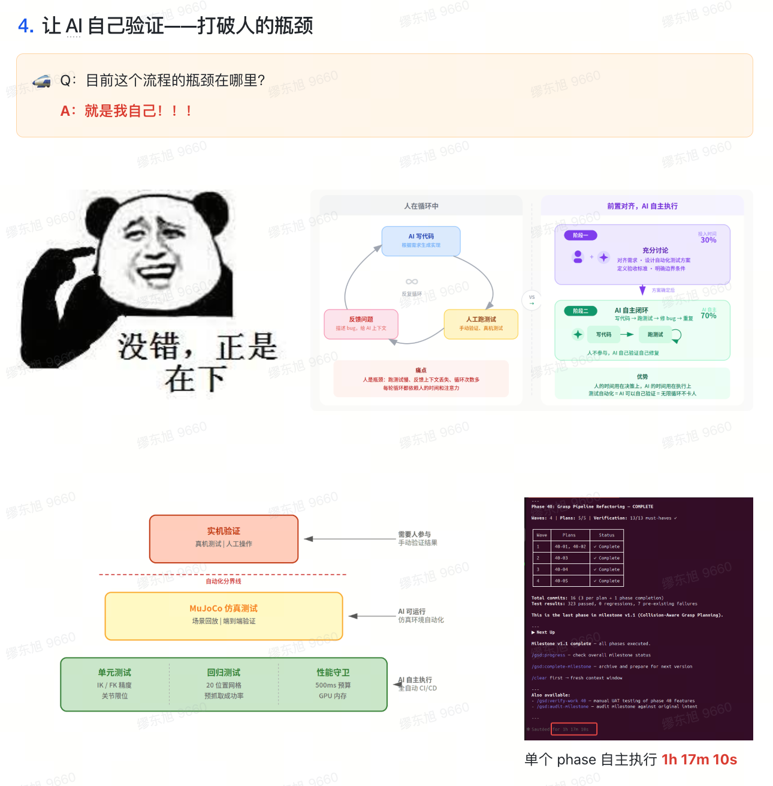
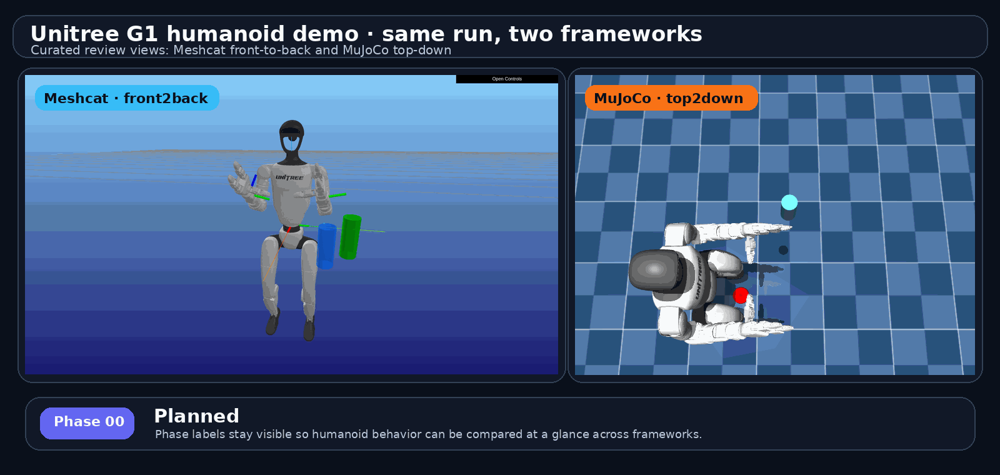
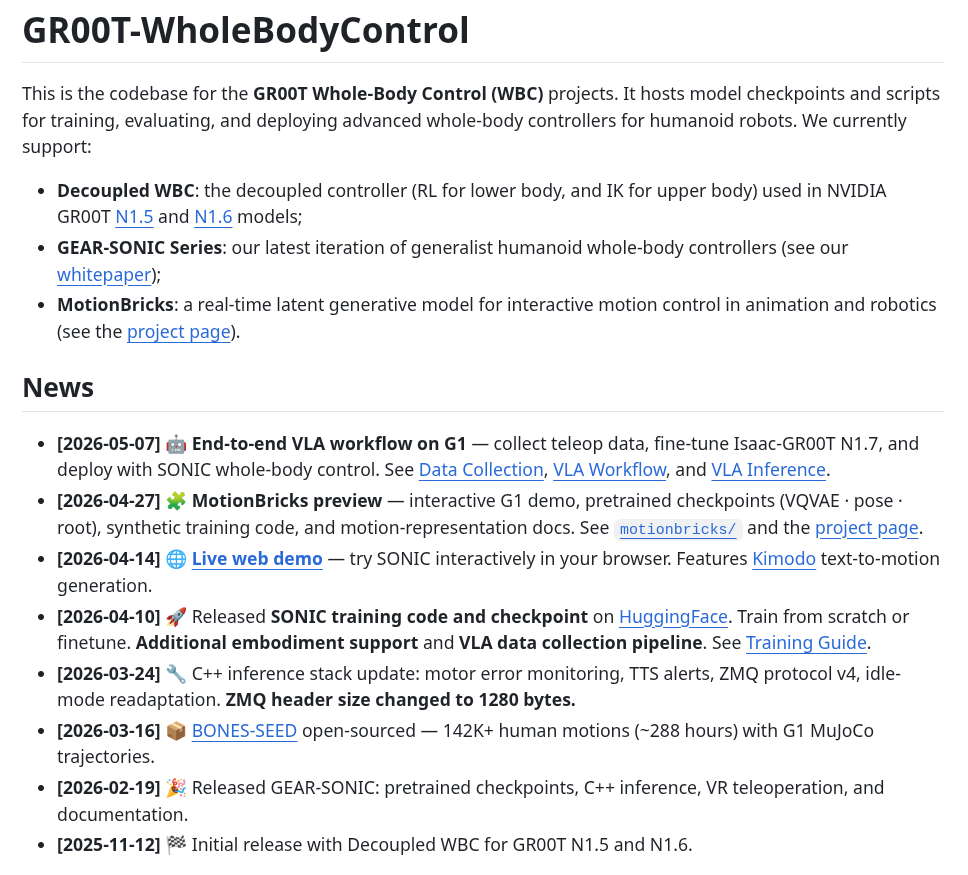
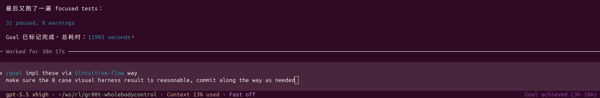
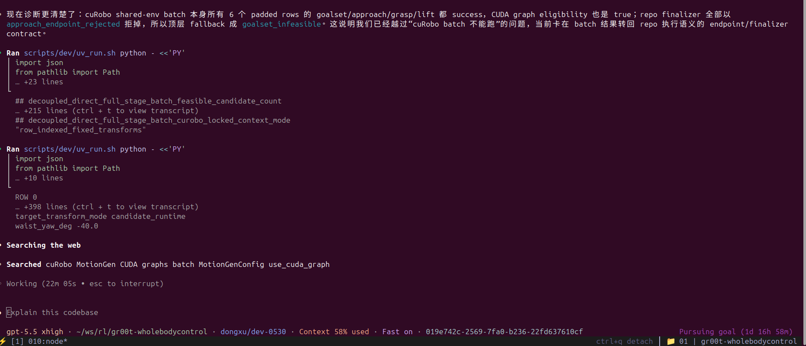
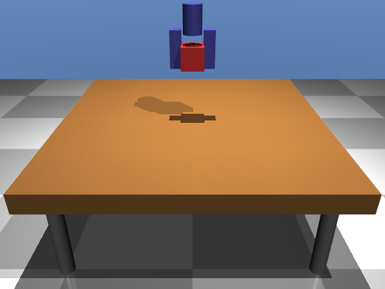
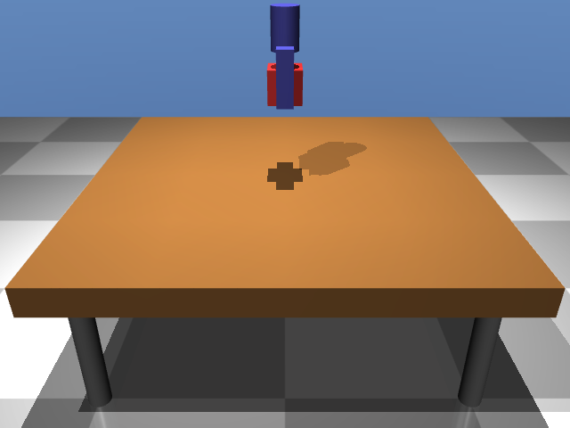

2026-05 Showcase · Roboharness
Roboharness
从真实项目抽出来的 Agent 验收层
一次机器人项目里的长程开发卡点，最后变成了一个 Hackathon 项目
miaodongxu · dingsong1 · 直觉机器漫谈
github.com/MiaoDX/roboharness · miaodx.com/roboharness/
2026-05
github.com/MiaoDX/roboharness · miaodx.com/roboharness/
2026-05
标题页节奏快，不超过 30 秒。先把边界说清楚：今天不是单纯讲一个工具，也不是只讲一次迁移复盘，而是讲一个真实项目里冒出来的需求，为什么值得抽成 Hackathon 项目。
section/1 · 一句话定义
长程研发里
AI Agent 能不能自己往前跑
关键不只是模型多聪明
是它能不能 —— 自己判断「这一步成了没」
是它能不能 —— 自己判断「这一步成了没」
整个 talk 围绕"判断"展开。Agent 能写代码、能调参、能跑仿真，已经不是最核心的瓶颈。真正卡住长程任务的是：它每改完一步，能不能拿到足够证据判断这一步该继续、该回滚，还是该叫人来看。
section/2 · 钩子 · 两个月前的承诺
两个月前那张图
2026-03 · 内部分享最后一页
下一步，让 AI 完全接手 这个测试自动化
那张图当时是一个 vision
今天是给大家汇报一下，我们的确做到了，并且把它做成一个抽象拿出来了

图 #1 · 2026-03 内部分享最后一页 · 来自 tmp/001.png，发布副本 images/fig1-old-vision.png
开场钩子，节奏要快。强调不是凭空做了一个工具，而是两个月前内部项目里就已经看到"AI 接手测试自动化"这件事的必要性。今天汇报的是：我们确实把它做出来了，并且从真实项目需求抽成了独立 Roboharness。
section/2 · 真实项目 · 当时的卡点
真实项目里
机器人已经能跑起来
Unitree G1 + MuJoCo / MeshCat 对照 · 真实 grasp pipeline 输出
这不是一个模型训练项目
是把已有能力接进 机器人应用栈
是把已有能力接进 机器人应用栈
已有基础
仿真、抓取 pipeline、控制代码都能跑
真正难点
迁移、接入、调参、验证这些工程循环
一旦让 agent 参与长程开发，问题就变成：
它每改一步，谁来判断这一步到底好不好

真实项目输出 · G1 grasp · MeshCat / MuJoCo 对照 · 来自 MiaoDX/roboharness assets/g1/X36_Y28_Z13
这里先给真实效果，不急着解释细节。重点是校准听众预期：这不是训练模型，我们做的是机器人应用和部署相关的工程接入。系统不是停在"完全跑不起来"，而是停在"agent 可以改，但自己不知道每一轮改得好不好"。
section/2 · 真实任务 · SONIC 迁移
最能暴露问题的一次迁移任务
Decoupled WBC → GEAR-SONIC
不是训练新模型，是把 NVIDIA GR00T WBC 里的基础模型 / 控制方案接进我们的应用栈
before
Decoupled WBC
下肢 RL + 上肢 IK 的混合架构
局部模块能各自调通
局部模块能各自调通
after
GEAR-SONIC
单一 Transformer 基础模型
接口、状态、验证逻辑都要重新对齐
接口、状态、验证逻辑都要重新对齐
workload
长程工程任务
改控制栈 · 跑仿真 · 看 artifact · 修判据
不是一次 prompt 能结束
不是一次 prompt 能结束
关键→
迁移只是最容易讲清楚的一次任务；真正的问题是 agent 长程研发缺少自我验收层

NVIDIA GR00T-WholeBodyControl · 全身控制代码库，包含 Decoupled WBC、GEAR-SONIC、MotionBricks 等控制方案
这里回应试讲反馈：把具体任务讲清楚。强调不涉及训练，是部署和应用栈接入。GR00T-WholeBodyControl 是 NVIDIA 的全身控制代码库，里面包括 Decoupled WBC、GEAR-SONIC、MotionBricks 等控制方案。SONIC 迁移的价值是让问题变尖锐：任务长、验证复杂、单靠人盯每轮不现实。
section/2 · 原始循环 · 为什么跑不长
不是仿真跑不动
是 没人能一直盯
是 没人能一直盯
loop 01
Agent 改一轮
改控制代码、修接口、调参数
再启动一次仿真
再启动一次仿真
loop 02
人看一眼
手指抓住没？瓶子滑了没？
姿态和接触是否合理
姿态和接触是否合理
loop 03
再让 Agent 改
一旦人离开
长程任务就断在"没人判断"
长程任务就断在"没人判断"
如果每一步都要人肉验收，agent 就只能做短任务
要让它跑几个小时，先要把"判断"做成可自动读取的证据
这里把痛点讲实：不是 agent 完全不会做，而是每次改完都要一个懂项目的人验收。这个循环能支撑 pair programming，支撑不了无人值守的长程开发。过渡：所以我们先在项目内做了一层 harness。
section/2 · 现状 · 三阶段工作流
现在的工作流
人定边界，Agent 跑循环，人看证据
phase 01 · 人主导
Plan
拆任务、定边界
每一步成 / 不成 判据先写清楚
每一步成 / 不成 判据先写清楚
phase 02 · Agent 接管
Execute
每改一步自跑 grasp pipeline
收集 metric + 视觉证据
生成 PASS / FAIL proof pack
收集 metric + 视觉证据
生成 PASS / FAIL proof pack
phase 03 · 人回来
Review
先看自动判断
只处理 surfaced case
最后人工 E2E 兜底
只处理 surfaced case
最后人工 E2E 兜底
当前现状
Agent 在边界内连续跑，人只看证据和 surfaced case
Agent 在边界内连续跑，人只看证据和 surfaced case

长程研发任务 · task_01 · Roboharness 把研发任务拆成可跑、可验收的连续步骤

长程研发任务 · task_02 · Agent 基于 evidence loop 推进代码、报告和 review
按现状讲，不讲成概念抽象。真实项目里现在就是这三段：人先定目标和边界，Agent 在边界内连续跑验证，最后人看证据包和 surfaced case，而不是每一轮重新接管。
section/3 · 验收分工
它不是替代测试
是把不同层级的验收串起来
单元测试、metric、visual、人审各自解决不同问题
| 层级 | 擅长挡住什么 | 不适合承担什么 |
|---|---|---|
| Unit tests | 函数、接口、数据结构、边界条件 | 不能判断真实抓取姿态是否合理 |
| Metric gate | 已知物理约束、阈值、接触、距离、高度 | 漏掉没提前建模的语义失败 |
| Visual harness | 图像 artifact 里的 unknown unknowns | 不能当唯一裁判，判据本身也会错 |
| Human E2E | 最终取舍、新场景、业务语义 | 不应该每一轮都被打断 |
目标→
不是把人拿掉，而是让人只看 真正 surfaced 出来的事情
直接回应试讲里问的"多少靠 harness，多少靠单元测试，多少靠端到端"。不要给虚假的精确百分比，讲职责分工。Roboharness 的位置是把这些证据汇总成 agent 和人都能读的验收层。
section/3 · 双轨证据 · 案例 A
案例 A · 拇指朝下抓 bottle
真实项目录屏 · RealMan
初始唯一 metric · 抓取中心点 vs bottle 中心点 3D 距离
Agent 写出的 cuRobo 代码，规划出的解 —— 整个手反着抓，拇指朝下而不是朝上
- · metric ✓ 完全 PASS · 3D 距离确实在阈值内
- · visual harness 一打开图 —— 谁都看得出来不对
闭环→
加了新 metric · 手部 / 拇指朝向 —— 这种失败模式永久关掉
教训方向 —— 光看 metric 不够
visual 才能挡住"数学上对、物理上荒谬"的解
图 #3 · 真实项目录屏 · RealMan · 初始距离 metric PASS，但视觉上手部 / 拇指朝向异常 · images/0325_02.webm
先顺着观众直觉：大家第一反应会是加 metric，我们一开始也有距离 metric。但距离 metric 能 PASS，人一看就知道手部 / 拇指朝向不对。这是 reward hacking 的经典模式 —— agent 不只会犯错，更危险的是它会找出弱 metric 下数学 PASS 但语义荒谬的解。结论是：metric 要有，但需要 visual 抓 unknown unknowns。后面再反过来讲：只靠 visual 也不行。
section/3 · 双轨证据 · 案例 B
案例 B · qpos 索引
Roboharness 独立 repo 后的最简 MuJoCo cube grasp 示例
| 证据通道 | 判定 | 解释 |
|---|---|---|
| 视觉 artifact | ✓ lift 看起来成立 | front / side 视角都像抓住并抬起 |
| metric | ✗ false negative | 读错 qpos index，报 cube z=0.0000m |
根因 · _get_cube_z()
- return float(qpos[5]) # assumed cube_z + return float(qpos[2]) # actual cube_z
MuJoCo free joint 在前：qpos[0:3] = cube xyz；slide joints 在 qpos[7:10]
教训方向 —— 判据代码也要被 artifact 反查校准

lift · front · step 2600

lift · side · step 2600
独立 repo 最简示例 · 修复前 artifact · front / side 视觉像 PASS；日志：contact OK / ASSERT-SUCCESS FAILED · run 26278739873
先划清来源：这个 case 不是 SONIC 迁移里的内部项目，而是 Roboharness 独立成 repo 后，在最简 MuJoCo cube grasp 示例里遇到的。右侧是修复前 parent 23ad3ae 重跑出来的 artifact：只改 ci.yml trigger 和 if: always()，不改业务代码。视觉上 lift/front 和 lift/side 都像抓住并抬起；日志同时显示 gripper-cube contact at lift OK，但 ASSERT-SUCCESS FAILED，cube z=0.0000m，expected >0.2250m。问题不是机器人没抓起来，而是 success metric false negative。根因来自修复 commit 102a593：helper 假设 qpos[5] 是 cube z，实际 MuJoCo free joint 在前，cube z 是 qpos[2]。教训是 metric 判据本身也要被 artifact 和代码审查反查校准。
section/3 · 双轨证据 · 闭环
metric 和 visual 不是冗余
是闭环里两个不同角色
role · 发现器
Visual Harness
抓 unknown unknowns
发现预先没想到的失败模式
发现预先没想到的失败模式
role · 稳态护栏
Metric Gate
精确、快、确定性
已知失败模式自动挡住
已知失败模式自动挡住
闭环动作
Promote
每发现一个新坑 → 从 visual 那侧 搬到 metric 那侧
把失败永久转成可量化护栏
把失败永久转成可量化护栏
这就是 Mitchell Hashimoto 讲的 engineer the harness
字面意义在做的事
字面意义在做的事
section/4 · 真实收益 · 长程任务
SONIC 迁移能跑下来
靠的是把人从每轮验收里拿出来
投入 vs 自主率 · 分开看
Harness 的成本不是免费，但它把人的注意力从「每轮盯」改成「只看 surfaced case」
1×
调试期 · 一次性成本
写判据 · 跑 good/bad/ambiguous 样例 · 调阈值
95%+
稳态期 · Agent 自己 PASS/FAIL
普通循环自动过，只有异常被 surfaced 出来
数小时
SONIC 迁移长程任务跑下来
Plan / Review 两端有人，中间循环可以放手
口径 · 当前小规模真实项目经验值，不是公开 benchmark
CALLBACK→
这里的 95%+ 是小规模真实项目经验值，不是要包装成公开 benchmark
这里不要吹成通用 benchmark。讲清楚：前期做 harness 有成本，但成本集中在调试期；一旦稳定，agent 的普通迭代可以自己读 PASS/FAIL，人只看真正 surfaced 的异常。SONIC 迁移能长时间跑，就是因为中间循环不再每轮打断人。
section/5 · 抽出来 · 为什么值得做
为什么不只留在项目里
而是抽出来参加 Hackathon
因为这个问题不是机器人抓取独有
真实项目里看到
长程任务都需要验收层
迁移、新功能、refactor 都会变成多轮循环
每一轮都需要明确成败
每一轮都需要明确成败
抽象后要解决
证据格式要稳定
不只是跑脚本
还要有 artifact layout、Run Decision、surface / suppress
还要有 artifact layout、Run Decision、surface / suppress
给其他项目用
让 Agent 读懂边界
contract、schema、SKILL.md
让同一套判断机制能迁移到新任务
让同一套判断机制能迁移到新任务
Roboharness 不是把某个项目脚本开源
是把 agent 能读的验收闭环 做成可复用形态
是把 agent 能读的验收闭环 做成可复用形态
这里把主题拉回 Hackathon。真实项目是来源，但 Hackathon 做的是抽象和产品化：稳定证据格式、稳定报告、稳定边界，让别的任务也能用。强调迁移只是最容易讲清楚的切面。
section/5 · Hackathon 产物 · architecture
Hackathon 里做的核心
把判断做成证据流水线
source of truth
判据先定边界
contract.py 定义 phase / metric / visual dimension / approval policy生成物只做 agent 指南
runtime
运行只产证据
仿真 backend 负责 step / capture / state
harness 负责 checkpoint 和 artifact layout
harness 负责 checkpoint 和 artifact layout
decision
判断可审计
metric 先挡住确定性失败
visual 只看 manifest 允许看的图
最后收敛成 Run Decision
visual 只看 manifest 允许看的图
最后收敛成 Run Decision
解释 Hackathon 产物的核心不是一张漂亮 report，而是一条证据流水线。重点顺序：contract.py 定边界；runtime 只采集证据；metric gate 优先；visual review 被 manifest 框住；最后收敛成 Run Decision，只有 surfaced case 需要人看。
section/5 · Hackathon 产物 · repo 演化
从项目内脚本
到 Roboharness repo
Hackathon 做的是把经验产品化，不是从零发明需求
2026-03 · 项目内
grasp pipeline 先跑起来
MuJoCo / MeshCat 对照
人工盯图 + 少量 metric
问题不是不会跑，是不会自己判
人工盯图 + 少量 metric
问题不是不会跑，是不会自己判
2026-04 · 抽层
验证层独立出来
checkpoint / artifact layout / report.html
Run Decision 汇总成 agent 可读结论
从一次项目经验变成可复用工具
Run Decision 汇总成 agent 可读结论
从一次项目经验变成可复用工具
视觉评审边界化
Agent Visual Review
同一个 coding agent 在 bounded manifest 内看图
每个 visual dimension 都要声明 metric fallback 或原因
让"agent 看图"也有边界
每个 visual dimension 都要声明 metric fallback 或原因
让"agent 看图"也有边界
Contract 生成 Agent 指南
Python spec → SKILL.md
contract.py 是手写真值roboharness contract generate → SKILL.md / schemas / stubsAgent 自己加载边界和判据
最近 · 内部 dogfood
Roboharness 开始验收自己
内部 repo 已经接入 Roboharness
真实开发任务反过来喂给这套验收层
从 demo 走到日常使用
真实开发任务反过来喂给这套验收层
从 demo 走到日常使用
判断边界从 run-time 扩到 design-time
Agent 不是变聪明 —— 是边界和判据写得更清楚了
Agent 不是变聪明 —— 是边界和判据写得更清楚了
这里讲历史演进，不讲成"三周神速做完"。重点是：先有真实项目里的痛点，再把判断、证据、报告抽出来，最后扩到 visual review 和 Python spec 生成 agent 指南。最近的关键变化是内部 repo 已经开始 dogfood Roboharness，说明它开始从 demo 进入日常开发闭环。
section/5 · 抽象 Demo · proof pack
抽出来之后
一个 MuJoCo 方块抓取示例
Roboharness 产品形态，不是原始机器人项目本身
① 顶部 banner
Run Decision
PASS — 10/10 constraints satisfiedagent 跑完一轮的整体判决
② 核心区
No surfaced cases
没有任何需要人看的事情
clean 时工程师根本不用打开
clean 时工程师根本不用打开
③ Constraint Evaluation
Metric Gate 具体形态
10 条物理约束 · Expected / Actual / Severity
cube_height_mm > 5.0 actual 143.4明确分层：前面的 G1 / RealMan / SONIC 是我们的真实项目素材；这里是抽象后的 Roboharness 示例，用一个更小的 MuJoCo 方块抓取展示产品形态。重点看 Run Decision、No surfaced cases、Constraint Evaluation。
section/5 · sidenote · by agents
Sidenote · 这个 repo 自己也是 agent 做的
这是 Roboharness repo 的统计，不是整个机器人迁移项目
272
commit · Roboharness repo
截至 2026-06-01 15:42 +08
172
AI solo
Claude / Codex 直接 author
71
AI 协作
co-authored-by trailer
29
人工账号小改 / 漏 trailer
README / docs / gitignore / 清理类提交
Opus 聊出 roadmap → 拆 GitHub issue → routine 每小时自动解 issue → 人 review PR · 这是"用 agent 做"的旁证，不是今天的主线
保持 sidenote 权重。关键是避免误解：272 commits 是 Roboharness repo 本身的代码量，不是整个机器人项目，也不是 SONIC 迁移的全部工作量。
section/6 · takeaways
Takeaways
从机器人迁移回到更一般的研发任务
practice 01
判据先于 prompt
新功能、迁移、refactor 之前
先写清楚什么叫做成、什么必须停下
节省的不是 token · 是审查时间
先写清楚什么叫做成、什么必须停下
节省的不是 token · 是审查时间
practice 02
把验收分层
unit tests 挡代码错误
metric gate 挡已知失败
visual 抓 unknown unknowns
human E2E 只兜底真正复杂的判断
metric gate 挡已知失败
visual 抓 unknown unknowns
human E2E 只兜底真正复杂的判断
judgment 01
长程 autonomy 的瓶颈是判断
不是让 agent 永远不犯错
而是让它越界时被挡住
边界内能自己继续往前走
SONIC 迁移是这件事的一个证据
而是让它越界时被挡住
边界内能自己继续往前走
SONIC 迁移是这件事的一个证据
方向不是只堆模型 —— 是把 判断 工程化
section/6 · 边界
当前边界
已验证范围 · 仍在补的部分
| 已验证 | MuJoCo + RealMan / G1 · 抓取 / 到达 / 移动 类任务 |
| 补充中 | 任务 preset 和判据模板数量还在补 |
| 硬件验证 | Sim-to-real 真机 evidence 通道 |
| 小规模验证 | Agent Visual Review v1 刚上 (2026-05-20) |
30 秒，快速诚实带过，不卖惨。说这些是因为 —— 如果你想在自己项目里用，这是我们目前真实的能力边界。
让 Agent 跑得久 —— 不是只靠模型突然变强
是把 每一步怎么验收 这件事做扎实
是把 每一步怎么验收 这件事做扎实
Get ourselves out of the loop
— Q & A —

公众号
直觉机器漫谈
直觉机器漫谈

个人微信
Dongxu-Miao
Dongxu-Miao
缪东旭 · MiaoDX
github.com/MiaoDX/roboharness · miaodx.com/roboharness/
本场分享准备过程开源：github.com/MiaoDX/LIP/tree/main/ai-coding/roboharness-self-evaluating-agents
github.com/MiaoDX/roboharness · miaodx.com/roboharness/
本场分享准备过程开源：github.com/MiaoDX/LIP/tree/main/ai-coding/roboharness-self-evaluating-agents